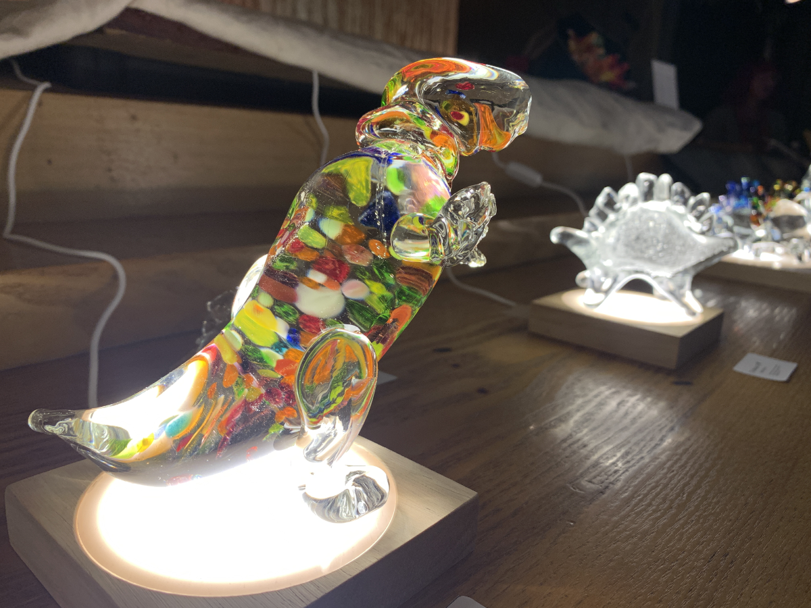
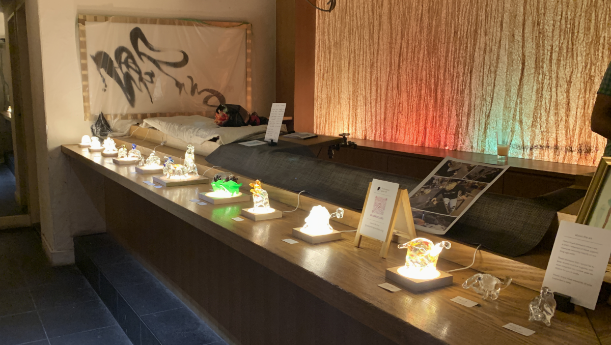
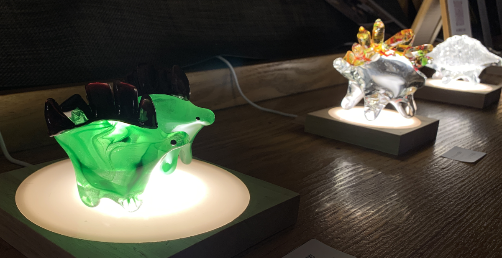

|

[English follows below.]
先月、六本木であるSARAU TOKYOの2年記念日で、初めてのガラスアート展を開催しました。友人たち、そして応援に来てくれた皆ん、ありがとうございます。SARAU TOKYOとは、ダンスパーティー、アートギャレリー、ドラッグショーの楽しいミックスでした。
2020年から趣味として吹きガラスをずーとし続けました。浜田山のガラス工事である「ガラス体験」のきっかけで、吹きガラスを夢中になりました。15歳の頃に近くの美術館に展示されたチフーリ・デールさんの作品を見るのは好きでしたが、まさか自分がガラス彫像を作れるとは思っていませんでした。
展示の写真はこちらになります。スペースは元々のラウンジバーで、台で光をつけました。ユニークで、印象的なギャレリースペースです。

ガラスアートですと、光はとても重要ですので、自分のライトを持ってきました。恐竜は台の上で、輝いている見たいです！

楽しい経験でした。私を呼んでくれたSARAU TOKYOに感謝します!
次回はまだ決まってませんが、次の展示にお楽しみにしています。展示の最近情報は、ガラスアート専用のウェブサイト (glassart.neocities.org) かインスタグラムのilluminesce_glassをフォローしてください。
また、お楽しみにしています！

My first glass show at SARAU Tokyo
I recently had my first glass art show at SARAU Tokyo's 2nd Anniversary in Roppongi, Tokyo. Thank you to my friends and to everyone who came out to support me. It was a mix of a dance party, an art show, and a drag show. So many beautiful people doing beautiful art.
I started glassblowing as a pandemic hobby in 2020. My partner signed me and some friends up to do a beginner's glassblowing class in Hamadayama, and I was instantly hooked. I've loved looking at Dale Chihuly's glass work since I saw his exhibit in the Dallas Museum of Modern Art as a teenager, but never dreamed I could make glass.
Here's some more photos of the show. The space was previously a lounge bar, lighted with small diases. It was a very unique space.
In showing glass art, lighting is very important. I used my own light sources, the diases, to light up the show. Look at how the dinosaurs sparkle underneath them! They really came alive.
It was a great experience and I had a fun time. Thank you to SARAU TOKYO for having me! To those I only got to speak to for a moment, I hope we have more time to chat soon.
I'm not sure when I'll be exhibiting next, but I am looking for new spaces. If you'd like the most up-to-date information, please bookmark my website at glassart.neocities.org and follow me on instagram at illuminesce_glass.
Until next time!